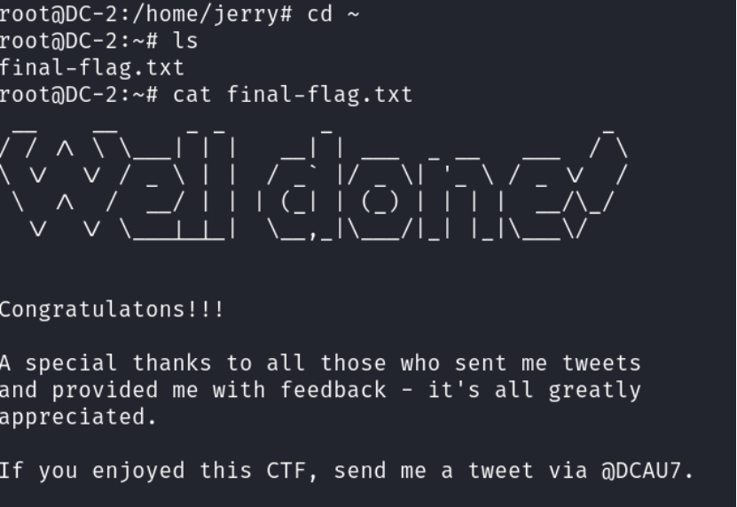

记录一下dc靶机系列的漏洞，本次学习的是DC-2，涉及重定向，爆破，rbash逃逸以及git提权，虽然也是之前未曾了解和学习的东西，但现在已经有了很深的理解
查找 DC-2的ip
1 | arp-scan -l |
ip是192.168.130.138
扫描开启的端口
1 | nmap -A -p1-65535 192.168.130.138 |
开启了80和77744端口ssh（默认22）
Did not follow redirect to http://dc-2/ 未遵循重定向到http://dc-2/
需要本地dns绑定dc-2 192.168.130.138，修改一下配置文件
1 | vi /etc/hosts |
添加一条记录：192.168.130.138 dc-2
登录网址查看一下：
利用工具dirsearch扫描一下网站目录
dirsearch -u http://dc-2/ -e * -x 403 404
有个wp-login.php，但没有账号密码
flag1提示了我们，一般的字典可能派不上用场，需要用到cewl工具爬取目标网站信息，生成相对应的密码字典，位置/home/zh1yu/dict.txt
针对该cms有专门的工具wpscan可以扫描出账号
1 | wpscan --url dc-2 -e u |
扫出三个账号：admin，jerry和tom
下面进行账号密码爆破：
1 | wpscan --url dc-2 -U /home/zh1yu/ua.txt -P /home/zh1yu/dict.txt |
成功扫描出账号密码，进行登录：Jerry adipiscing 和Tom parturient
拿到flag2，但这里提示需要换另一种方式得到shell，我们已经试过80端口，那接下来需要测试下ssh登录
利用jerry的账号密码ssh连接
1 | ssh jerry@192.168.130.138 -p 7744 |
但这里根本连不了jerry，于是换一个tom的
1 | ssh tom@192.168.130.138 -p 7744 |
成功ssh连接，但是发现有rbash限制（可以理解为很低权限的用户）
接下来我们用rbash提权
先执行：echo $PATH（在当前终端，显示当前环境变量 PATH 的值）
再执行：echo /home/tom/usr/bin/* 看有哪些命令可以用
有less，ls，scp和vi，我们可以用vi开启一个进程，把shell变量设置成bash，然后启动该shell
1 | vi |
rbash变成了bash，但没有该命令，再改一下环境变量，环境变量可以帮我们找到即可
1 | export PATH=$PATH:/bin/ |
BASH_CMDS法：这行代码将 /bin/bash 赋值给 BASH_CMDS 数组中的 x 键，效果：创建一个名为 x 的别名，执行时会启动一个不受限的bash shell,执行前面定义的 x 命令，由于 x 被映射到 /bin/bash，这会启动一个不受限制的bash shell
在rbash中，PATH通常被重置为非常有限的值，export PATH=$PATH:/bin/，export PATH=$PATH:/usr/bin 这两行代码恢复了访问系统基本命令的能力
执行下面命令，看看有没有flag
1 | cat fl* |
提示使用su命令，那应该就是切换到jerry用户
1 | su jerry |
切换到jerry用户的目录，发现flag4
提示可以使用git，再使用sudo -l查看用户命令权限，又发现可以以root权限使用git，那接下来就是git提权
1 | sudo git help config |
sudo git help config这会打开 Git 帮助文档的分页视图
输入：!/bin/bash这会从分页器中启动一个新的 bash shell，因为原命令是通过 sudo 运行的，所以新 shell 也会继承 root 权限
成功切换到root用户、切换到root目录，ls发现最终flag

那么本次的渗透之旅就到此结束了，感谢观看！
无心生大用，有物不通神